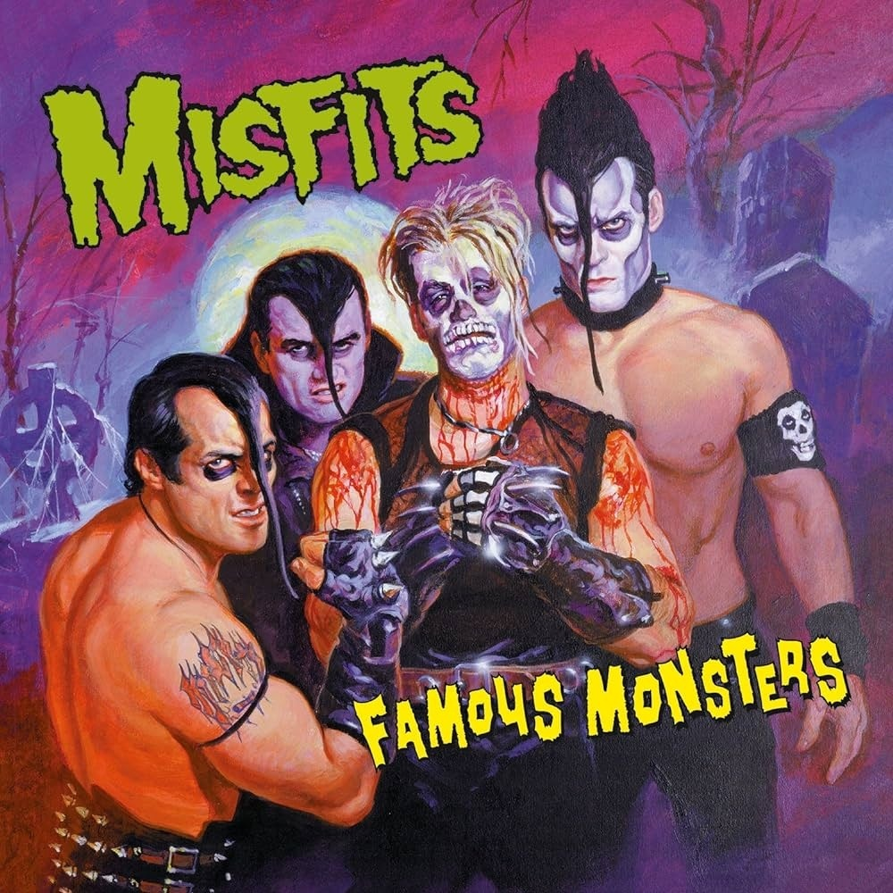
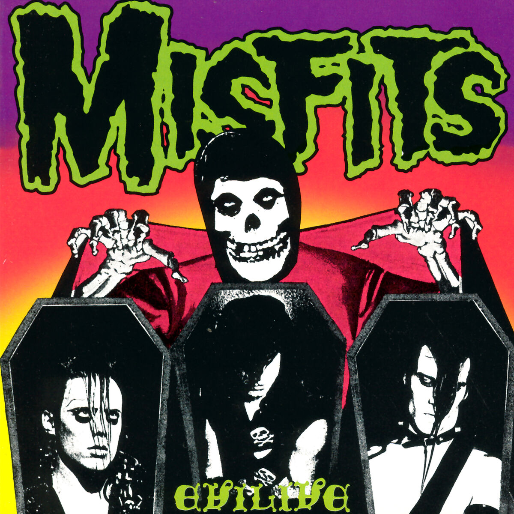

Biografia
Misfits é uma banda de punk rock formada por Glenn Danzig em 1977 na cidade de Lodi, Nova Jérsei. A banda já vendeu mais de 5 milhões de cópias em todo mundo.
São citados como criadores do estilo horror punk, misturando punk rock e outras influências musicais com temas e imagens de filmes de terror, além de exercer influência em diversas outras bandas de rock e heavy metal em geral.
Discografia
Galeria de Fotos
 Contato
O contato com a rede oficial da banda pode ser feito por sua página oficial do instagram ou pelo site oficial